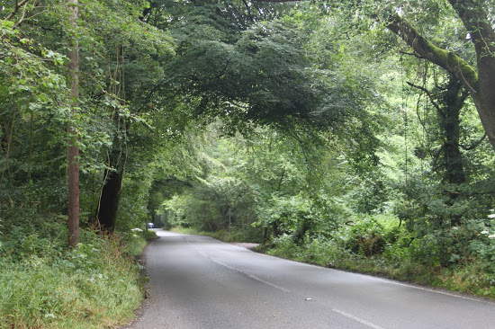
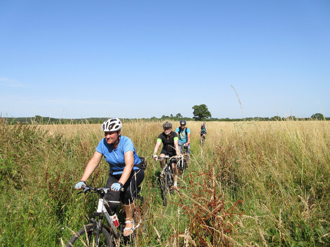
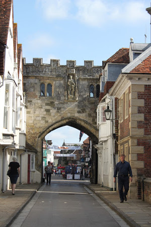
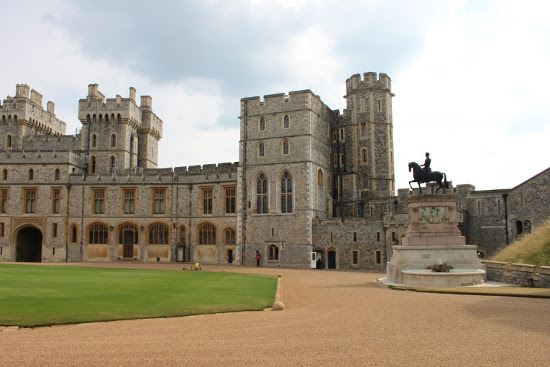

Представляем маршрут "По старой доброй Англии". Он вполне соответствует своему наименованию. Мы собираемся проехать по классическим английским местам, посетить славные города Бат, Солсбери, Винчестер. Изюминкой похода станет проезд от Оксфорда до Лондона по долине реки Темзы. Не просто так! По Джеромовским местам! Помните "Трое в лодке не считая собаки"? Вот, события развивались тут.
Мы задумали маршрут, главная цель которого — знакомство с Англией с велосипедного седла. Да, километражи небольшие, маршрут не сложный. Типичный пробег — 60 км. Правда, с вашими гидами-придумщиками 60 км легко могут превратиться в 70... Всегда можно куда-нибудь еще зарулить. Мы хотим много смотреть, многое увидеть. Мы будем стараться забираться в дебри английских лесов, полей. Чтобы увидеть старую патриархальную Англию. Конечно, мы увидим и Имперскую Великобританию во всем ее величии... Но обо всем по порядку.

День 1. Мы прилетаем в Лондон.
Рекомендуемый аэропорт — Гатвик. Рекомендуемое время — утром. Из Гатвика мы организуем трансфер на южный берег Англии в город Брайтон. Не надо путать с Брайтон бич в Нью-Йорке. Кстати, зачем нам Брайтон бич в Нью-Йорке, если на нем «опять идут дожди»? В Брайтоне мы увидим Ла-Манш - пролив, который отделяет Англию от континента. Эта довольно узкая полоска воды, которую опытные пловцы даже переплывают в самом узком месте (32 км), во многом определила английское самосознание. Его часто называют «островным». Если что - можно отсидеться за каналом. Все варятся в одном европейском котле, а мы - особые. Известна шутка про прогноз погоды в Англии: "над морем туман, континент изолирован". В Брайтоне есть также здание Королевского павильона, которое считается многими самым красивым и самым экзотическим зданием Англии.
День 2. Брайтон — Чичестер. 60 км.
Этот день у нас посвящен знакомству с южным побережьем Англии. Здесь идет незаконченный пока Национальный веломаршрут номер 2, который можно посмотреть на сайте http://www..sustrans.org.uk/. Кое где наша дорожка идет прямо по берегу моря. Справа Англия, слева - море. В этот день у нас будет очень разнообразное катание! Мы поедем и по дорожкам, и по тропам, и по грунтовкам. Будет очень интересно. Изюминкой дня станет визит в Арундельский замок, основанный еще соратником Вильгельма Завоевателя. А его владелец носит самый старый графский титул в Англии.
В окрестностях Чичестера расположен большой Гудвуд-парк, с великолепным замком герцога Ричмондского (при хорошем поведении мы попробуем в него заехать, он чуть в стороне от планируемого маршрута). Ночуем в городе Чичестер. В первой половине IX века Чичестер был значительным пунктом. При Вильгельме Завоевателе стал резиденцией епископа; позже был главным городом графства Суссекс. С 1114 по 1336 гг. строился пятинефный собор в готическом стиле, который называют самым типичным средневековым собором Англии. Что ж, посмотрим самый типичный собор.

Кстати, в нескольких отелях по нашему пути будут СПА, или, как минимум, бассейны. Это довольно приятный бонус - занырнуть в бассейн после "трудового" дня. В Чичестере первый такой отель.
День 3. Чичестер — Винчестер. 62 км
Этот день отчасти пройдет по велосипедному маршруту «The South Downs Way». Попадутся нам и грунтовые дорожки, петляющие по бережно сохраняемым лесам. После ланча приедем в Винчестер. Это крупный город времён Римской империи. Король Альфред Великий в IX в. объявил его столицей королевства Уэссекс, а Кнуд Великий сделал Винчестер столицей всей Англии. Вплоть до XIX века местная ярмарка была одной из крупнейших в стране. Винчестерский собор превосходит все средневековые храмы Европы по длине своего нефа (170 метров). Помимо нескольких английских королей, в соборе покоится прах писательницы Джейн Остин. В начале XX в. древний храм стал разрушаться из-за того, что его фундаменты постепенно уходили в почву. Семь лет продолжалась закачка бетона в основание собора, благодаря чему он был спасён. На окраине старого Винчестера высятся остатки Винчестерского замка, с Большим залом (Great Hall), который был построен в 1234 г. Именно в этом зале, согласно легенде, за столом короля Артура собирались рыцари Круглого стола. Столешница стола сохранилась, и выставлена на всеобщее обозрение. Правда использовать ее тяжело - она висит на стене.
День 4. Винчестер — Солсбери. 55 км.
Возможно, природа в этот день не покажется нам такой красивой, как днем ранее: леса сменяются полями. Но тут такие rolling hills - очень приятный рельеф для катания. Но ведь где-то же надо англичанам выращивать овсянку для завтрака и ячмень для пива? Зато Солсбери... Позволю себе цитату: «Список достопримечательностей Солсбери кажется бесконечным: фасад здания гильдии плотников на улице Св. Анны - XVI век, здание гильдии обувщиков - XVII век, здание ратуши - XVIII век, Poultry Cross на Силвер-стрит намного старше - XV век. Из множества благотворительных зданий богадельня Frowd's на Бедвин-стрит отличается особым очарованием, как впрочем, и госпиталь Св. Троицы XVIII века. Также интересен банкетный Зал Джона Халла - сварливого мэра XV века. Он находится при входе в кинозал Одеон, отреставрирован в 1834 г. Здание муниципалитета - симпатичный дом из красного кирпича, перестроенный в XVIII веке, теперь принадлежит городу, и на усаженных деревьями площадках видны руины городских крепостных валов». И это не считая собора с самым высоким в Англии шпилем.

День 5. Солсбери — Стоухендж — Фром. 63 км.
В этот день мы смотрим Стоухендж. Знаменитое на весь мир сооружение. О том, что это такое, до сих пор спорят ученые.. Мы, люди знающие русский язык, можем выдвинуть свою версию: это славянское поселение «сто ушей», отсюда и название Стоухендж. Это, конечно, шутка, но посетить мировую достопримечательность надо. Далее наш трек идет через равнину Солсбери в городок Фром. Небольшой торговый городок, в котором сохранились старинные здания. Я не уверен, можно ли считать Фром классическим городком английской провинции, но, надеюсь, он вам понравится. Перед въездом во Фром путь наш идет через замечательные места по национальному веломаршруту. То дорожка, то тропинка ведет нас по лесам, и приводит к Лонглит Хаус. Вот где кажется, что типичная Имперская Англия. Могучее здание стоит одно в окружении колоссального по размеру парка, переходящего в лес.
День 6. Фром — Bath. 43 км.
Сегодня у нас на маршруте - чудо. Велосипедное чудо. Мы поедем по разобранной железной дороге, которая идет на многие километры, нигде не выходя на дорогу с автомобильным трафиком. А завершается это велосипедное чудо тремя тоннелями. Самый длинный - 1670 метров. В нем сделана подсветка и... и... светомузыка.
Проехав по второстепенным дорожкам, мы достигнем старинного города Бат. Бат является одним из красивейших исторических городов Англии. Не удивительно, ведь основан он был еще римлянами. Именно они построили главную местную достопримечательность — термы. Вообще Бат — городок, переполненный старинными архитектурными зданиями и григорианскими улочками. Он по праву входит в список Всемирного наследия ЮНЕСКО и является одним из наиболее колоритных городов страны. Термы, конечно, обязательный для посещения элемент. Время для визита в них зарезервировано.
День 7. Bath – СПА отель в пригороде Свиндона. 65 км.
В этот день мы покидаем Бат и едем по симпатичной местности, где поля чередуются с лесами. Есть тут и холмики. Кататься в этих краях не скучно. Мы теперь движемся в направлении Оксфорда. по ходу проедем городок Свиндон, где посетим железнодорожный музей. Ведь Англия была еще и передовой технологической державой. В музее представлены паровозы, бороздившие некогда местные дороги. Вечером нас ждет СПА отель с большим бассейном.

День 8. Свиндон — Оксфорд. 65 км.
Наши пути-дорожки приводят нас в Оксфорд, из которого мы и поедем путем Джерома по долине Темзы. Достопримечательности Оксфорда я не буду описывать, а адресую вас в Яндекс. Их слишком много, даже для того, чтобы просто перечислить. Скажу лишь, что Оксфорд - совершенно не такой, как другие города Англии. Здесь на улицах толпы молодежи, что, безусловно добавляет городу колорита. Слышна тут и русская речь. Перед тем, как приехать в Оксфорд, мы посетим замок Черчиллей, Блехэмский дворец. Если по архитектуре, вероятно, английские замки и уступают, скажем, замкам Луары, то, конечно, их расположение великолепно. Колоссальные парки, леса... Здесь мог английский джентльмен погулять в одиночестве... И, конечно, газоны.
День 9. Оксфорд — Рединг.
Утро этого дня мы проведем в Оксфорде. Одного вечера для осмотра города маловато. А после поедем вдоль Темзы в Рединг. Начинаются Джеромовские места. Мы увидим и шлюзы, и города, которые помянуты Джеромом. Конечно, сегодня тут совсем не так. Полтора столетия прошло.
День 10. Рединг — Виндзор — Кемптон парк (Лондон). 55 км.
Это конечный день нашего велопутешествия. Утром мы доедем до Виндзорского замка и после его осмотра продолжим путь в Лондон. Наш отель находится не в центре. Все-таки Лондон огромен. Наш отель располагается в Кемптон парке, откуда в Лондон можно довольно удобно ездить на местном транспорте. Электричка идет около 35 минут, и останавливается буквально в 7 минутах ходьбы пешком от нашего отеля. Кстати, отель тоже неплох: у него ресторан выходит прямо на берег Темзы. Красота!
День 11. Отлет.
А чего так, отлет? А погулять по Лондону? А это — сколько угодно. Тем более, что маршрут наш заканчивается в пятницу, и вы можете вполне еще пару дней провести в столице Англии. Хотя, Лондон в представлениях не нуждается, и вы можете остаться в нем еще хоть на неделю. Но уже без нас. А мы доставим улетающих в аэропорт к рекомендованным рейсам. Хотите - Хитроу, хотите - Гатвик.
Стоимость маршрута можно уточнить на странице Календарь.
Обратите внимание: цена в фунтах. Какой курс фунта? Есть про это хороший анекдот советского еще времени. Звучит так: установлена связь между тремя валютами. долларом, рублем и фунтом. Теперь один доллар стоит фунт сушеных рублей. В Англии в ходу фунт, и все цены мы считаем в фунтах.
В цену входит: размещение по маршруту в двухместных номерах в гостиницах. Обратите внимание, что часть гостиниц у нас 3 и 4 звезды, и в них есть бассейны, а в некоторых еще и сауны. Далее, входит сопровождение машины, которая перевозит багаж, а также раненых и изнемогших, если вдруг такие появятся. Работа гида и механика, завтраки и ланчи в ходовые дни. Нет ланча в день прилета, перед городком Бат и в день финиша в Кемптон Парке (Лондон). Встреча в аэропорту с рекомендованных рейсов, проводы в аэропорт к рекомендованным рейсам.
Не входит: виза, визовый сбор. страховка перелет в Англию ужины входные билеты в музеи;
До встречи в Англии!